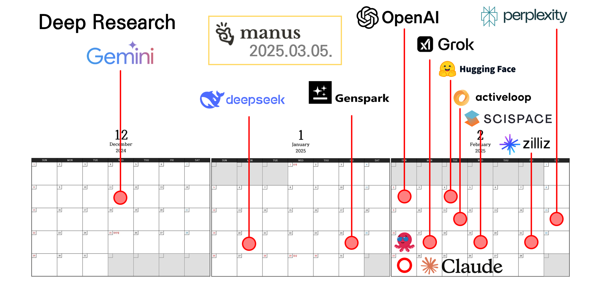
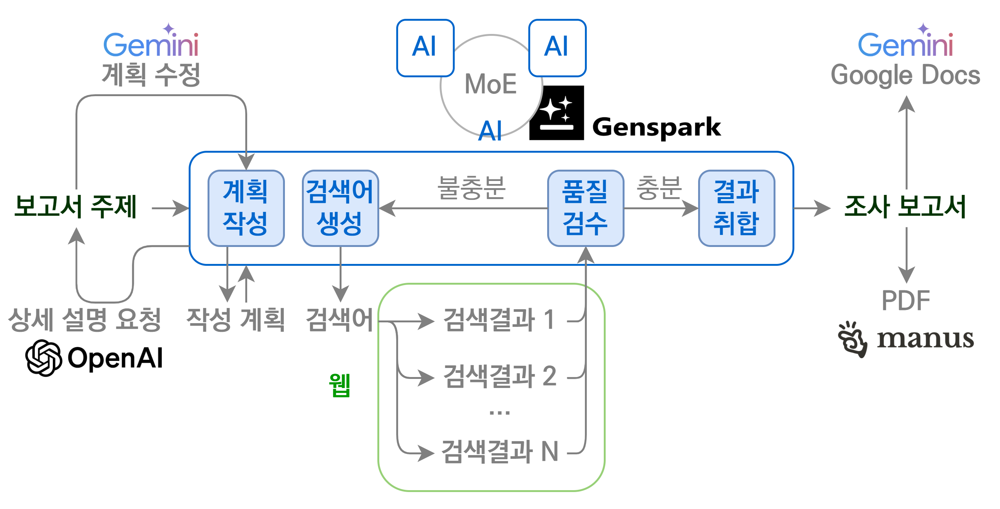
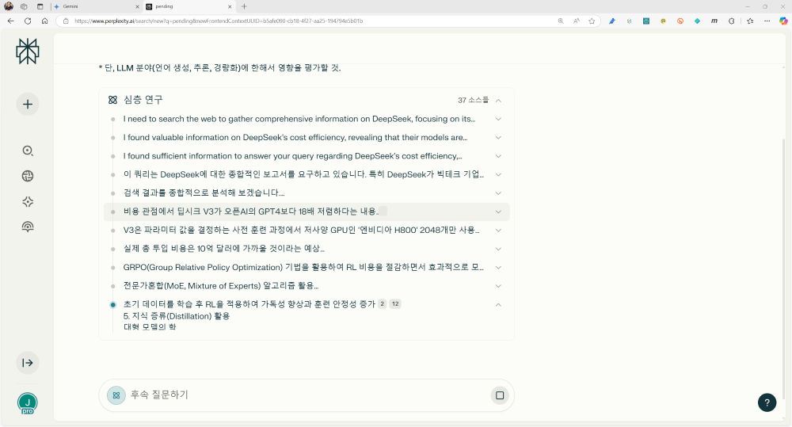
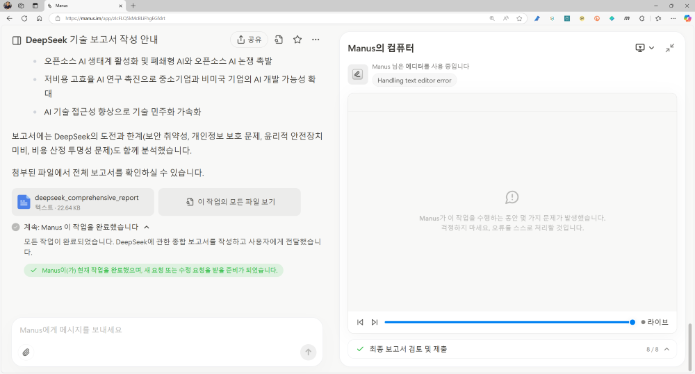

- Gemini 1.5 Pro를 시작으로 거대언어모델에 Deep Research가 포함되기 시작했습니다.
- DeepSeek-R1도 Deep Research를 포함하여 높은 성능으로 유명세를 탔고,
- 며칠 뒤 OpenAI도 o3를 기반으로 한 Deep Research를 출시했습니다.
- Manus를 포함해 지금은 일반명사처럼 되어버린 Deep Research를 비교합니다.
1. Deep Research
- Deep Research는 정보 수집을 위한 agentic AI입니다.
- 의외로 Genspark가 상당히 일찍 기능을 탑재했습니다.
- 언어 모델 자체를 개발하지 않더라도 프롬프트로 어느 정도 구현 가능하기 때문입니다.
- 2월에는 HuggingFace, zilliz 등 오픈 소스 프로젝트로도 다양하게 공개되었고,
- Claude 3.7 sonnet가 모델 자체에 thinking mode를 내장한 hybrid model임을 공개했지만 웹 검색 기능이 없어 Deep Research로 쓰기기엔 어렵습니다.

- Deep Research에서 말하는 Research는 unknown을 known으로 만드는 연구는 아닙니다.
- 온라인에서 탐색 가능한 정보를 빠르게 찾아 모으는 Survey나 Review에 가깝습니다.
- 대량의 문서를 검색하여 들여다 보고 질문에 대한 답을 찾아 상당히 긴 보고서를 만듭니다.
- 따라서 모델에 적재될 수 있는 최대 분량인 context size가 많이 중요하고, 최근의 추론용 모델들이 많이 유리합니다.
- 서비스에 따라 다소간의 차이는 있지만 대개 다음과 같은 형식으로 수행됩니다.
1. 사용자가 제시한 질문에 대한 정보를 수집하기 위한 검색어 생성
2. 웹 검색과 데이터 분석을 통한 정보 수집
3. 수집된 정보를 체계적으로 정리 - 수집된 정보가 사용자가 제시한 질문에 대해 충분하지 않다고 판단하면 추가 검색어를 더 만듭니다.
- 답변에 단계별로 접근하는 chain-of-thought를 자료 수집을 포함해 적용한다고 볼 수 있습니다.
- Genspark는 여기에 MoE(Mixture of Expert)를 추가로 지원합니다.
- GPT, Gemini, Claude가 내놓은 답변을 분석하여 미흡한 부분을 한번 더 메워줍니다.

- 반복 검색과 정보 추출을 반복하느라 일반 답변에 비해 시간이 많이 걸립니다.
- 계속 기다리기 지루한 점을 감안하여 대부분의 AI agent들이 화면을 꺼도 백그라운드에서 작업을 지속하고,
- Gemini나 Genspark처럼 작업이 완료된 후 메일로 보내주기도 합니다.
- 결과 보고서를 복사, 붙여넣기 하기도 만만치 않습니다.
- GPT에게 .docx 파일로 저장하라고 하면
...(중략)...을 중간에 넣어버립니다. - 전체를 통으로 복사해서 MS word나 Google docs에 붙여넣기를 할 수 밖에 없습니다.
- Gemini는 Google docs로 보내 편집할 수 있는 기능을 제공하고,
- Manus는 markdown 형식 파일과 PDF 파일 다운로드를 지원합니다.
2. Deep Research AI Agents
slownews: 오픈AI, 박사급 연구 에이전트 ‘딥 리서치’ 발표
Deep Research, Deep Bullshit, and the potential (model) collapse of science
- Deep Research에도 환각이 있습니다. 제법 많다고 느낍니다.
- 특히 빠르게 업데이트되는 AI 관련 정보들은 과거와 현재의 정보가 모두 웹에 올라가 있습니다.
- 과거와 현재의 정보가 다르다면 과거 정보를 버리고 현재 정보를 취해야 하지만 이게 쉽지 않습니다.
- 과거의 잘못된 정보가 퍼날라지며 재생산되기도 하고, 기성 언론에 인용되면서 권위를 가지기도 합니다.
- 이 글을 쓰게 된 계기는 Deep Research에 대한 칭송과 달리 환각이 심하다고 느끼기 때문입니다.
- 언론에서는 박사급이라고 칭송하기 바쁘지만 제 체감과 많이 다릅니다.
- “박사가 자료 조사를 이렇게 하면 안될텐데?” 라는 생각이 들 정도의 구멍이 보이기 때문입니다.
- ChatGPT 초창기 화면을 빠른 속도로 뒤덮는 글자에 압도당해 내용을 보지도 않고 떠받들던 게 언론입니다.
- 저만 이런 지적을 하는 것은 아닙니다만 (게리 마커스 글 링크)
- 제가 답을 알고 있는 문제를 가지고 테스트를 해 보기로 했습니다.
- 동일한 프롬프트를 넣고 실시한 Deep Research 결과물끼리 비교해보도록 하겠습니다.
- 정답 또는 오답을 알고 있는 것들로 질문을 구성했습니다.
- 주제는 DeepSeek에 대한 보고서 작성입니다.
- 1. DeepSeek은 OpenAI 등 빅테크 대비 얼만큼의 저비용을 달성했나?
- DeepSeek의 훈련 비용이 80억원 또는 600만 달러라고 답하면 오답입니다.
- 기존 모델 제작비용, 실패 매몰 비용, 인건비 등이 모두 빠진 금액입니다.
- 2. DeepSeek가 저비용으로 성능 좋은 추론 모델(DeepSeek-R1)을 훈련시킬 수 있던 방법은?
- H100 추론 가속
FlashMLA - FP8 행렬연산
DeepGEMM - GPU 병렬화
DualPipe,DeepEP - MoE 스케줄링
EPLB - 병렬 분산 파일시스템
3FS - 강화학습
GRPO - Mixture-of-Experts
MOE - 위 내용들을 얼마나 충실히 언급하는지가 포인트입니다.
- H100 추론 가속
- 3. DeepSeek는 자사의 기술을 공개했나?
- ‘25년 3월 DeepSeek Open Source Week과 오픈 소스 공개를 제대로 말하면 합격입니다.
- 4. DeepSeek의 기술이 AI 분야에 미친 영향은?
- 얼마나 잘 정리해서 답하는지가 포인트입니다.
- 엔비디아 주가 하락, 소프트웨어 기술을 활용한 엔지니어링 혁신, 미-중 양강구도 등 답은 많습니다.
2.1. OpenAI
- 먼저, OpenAI Deep Research에서 실시합니다.
- Deep Research옵션을 켠 후 질의를 실시했습니다.
- Deep Research는 o3 모델을 사용한다고 알려져있기 때문에 모델 선택은 무의미할 겁니다.
- 탐색 범위를 좁히기 위한 역질문이 옵니다.
- 두 개의 답변을 하고, 이후 다른 모델로 Deep Research를 수행할 때는 이 답변을 추가합니다.
- OpenAI Deep Research는 자료를 읽으면서 검색을 이어갑니다.
- 모든 자료를 제대로 읽는 것은 아닙니다.
- DeepSeek을 서울대학교 연구팀이 개발했다는 엉뚱한 소리를 합니다.
- 심지어 위아래 소스를 클릭해 들어가봐도 그런 말은 없습니다.
- Deep Research의 환각이 목격된 순간입니다.
- 약 10분이 지난 후 보고서가 완료되었습니다.
- 문장마다 레퍼런스가 붙어있어 클릭하면 해당 레퍼런스로 이동합니다.
- 적잖이 길게 나온 보고서를 활용하려면 문서로 만들어야 하는데 분량이 만만치 않습니다.
- Data Analyst를 이용해 MS office 파일로 만들려면 실패를 거듭합니다.
- context size 때문에 파이썬 코드 안에 보고서 전체를 다 넣지 못하는 것 같습니다.
- 답변 맨 하단의 복사하기아이콘을 눌러 MS word 등에 붙여넣으면 볼만해집니다.
- 총 4페이지로 정리되었고 레퍼런스 링크를 포함한 정보들이 잘 살아있습니다.
- GPT Deep Research가 제공한 보고서는 여기에서 내려받을 수 있습니다. (다운로드 링크)
● OpenAI Deep Research 평가
1. DeepSeek은 OpenAI 등 빅테크 대비 얼만큼의 저비용을 달성했나?
불합격- 6백만 달러라고 답합니다.
2. DeepSeek가 저비용으로 성능 좋은 추론 모델(DeepSeek-R1)을 훈련시킬 수 있던 방법은?
합격MOE,강화학습,Distillation,EPLB,FP8,병렬처리와 노드 간 통신을 언급합니다.
3. DeepSeek는 자사의 기술을 공개했나?
불합격- 오픈 모델 공개와 논문 공개는 언급하지만 ‘25년 3월의 5 days 행사는 언급하지 않습니다.
4. DeepSeek의 기술이 AI 분야에 미친 영향은?
합격- 전반적으로 여러 각도에서 종합적으로 서술하고 있습니다.
- 자료 수집 중에 들어간 환각이 반영되지 않았습니다.
2.2. Google Deepmind Gemini 2.0
- Google Gemini 좌측 상단 모델 선택 메뉴에서 Deep Research를 선택합니다.
- OpenAI에 넣은 것과 같은 질문을 넣으면서 역질문에 대한 답을 함께 입력합니다.
- 사실 Gemini는 Deep Research를 처음 탑재한 모델입니다.
- ‘24년 12월 Gemini 1.5 Pro with Deep Research라는 이름으로 공개되었으나 이상하리만치 반향이 적었습니다.
- Gemini Deep Research는 계획을 먼저 세웁니다.
- 추가하거나 빼고 싶은 부분, 고치고 싶은 부분이 있으면 수정 내역을 입력할 수 있습니다.
- 여기서는 연구 시작을 눌러 부가적인 수정은 하지 않았습니다.
- 그런데 간혹 계획이 너무 성의없이 작성되는 경우가 있으므로 확인할 필요가 있습니다.
- 계획에서 만든 단락보다 조금 작은 단위로 선 검색 후 읽기를 진행합니다.
- 다수의 레퍼런스를 확보한 후 이들을 읽고 단락을 정리하는 방식입니다.
- 읽은 내용에 맞추어 검색을 수행하는 것으로 보이는 OpenAI와는 다른 느낌입니다.
- OpenAI보다 절반 정도 시간에 보고서가 완성되었습니다.
- Gemini는 우측 상단에 Export to Docs버튼이 있어 Google docs로 보낼 수 있다는 특징이 있습니다.
- 보고서 중간에 있는 표 또한 Export to Sheets를 통해 보낼 수 있습니다.
- Google Docs로 넘어간 문서는 Download기능을 통해
.docx부터.pdf,.md등으로 변환 가능합니다. - Google Docs에 내장된 번역기능을 누릴 수 있으며,
- Gemini 사용이 가능해 길이나 어조 편집이 가능하지만 스타일, 꾸밈은 편집이 안됩니다.
- Gemini Deep Research가 제공한 보고서는 여기에서 내려받을 수 있습니다. (다운로드 링크)
● Gemini Deep Research 평가
1. DeepSeek은 OpenAI 등 빅테크 대비 얼만큼의 저비용을 달성했나?
합격- V3 개발비용 560만달러가 최종 학습 실행 비용만임을 레퍼런스와 함께 제시합니다.
- ‘25년 3월의 기사를 인용하여 GPT-4의 1억 달러 대비 1,500만 달러 수준임을 언급합니다.
2. DeepSeek가 저비용으로 성능 좋은 추론 모델(DeepSeek-R1)을 훈련시킬 수 있던 방법은?
합격강화학습,소량의 콜드 스타트 데이터와 SFT,MoE,MTP,DualPipe등등을 언급합니다.
3. DeepSeek는 자사의 기술을 공개했나?
불합격- 오픈 모델 공개와 논문 공개는 언급하지만 ‘25년 3월의 5 days 행사는 언급하지 않습니다.
4. DeepSeek의 기술이 AI 분야에 미친 영향은?
합격- 언어 생성, 추론 효율성, 모델 경량화 등 관점에서 종합적으로 서술하고 있습니다.
2.3. Perplexity
- 미리 말씀드리자면 Perplexity는 오늘 글에 언급된 Deep Research 중 가장 빠른 시간에 보고서를 완성합니다.
- 줄글이 길지 않지만 간략한 단어로 정리해주는 것이 Perplexity의 매력이 아닐까 싶습니다.
- 입력창 왼쪽 하단에서 Deep Research를 선택하고 프롬프트 입력 후 실행을 누릅니다.
- Perplexity는 초반에 참고문헌을 모두 검색해 놓은 뒤,
- 확보한 참고문헌들을 읽으면서 토막 정리글들을 만들고 이를 붙이는 방식으로 정리합니다.

- 약 5분만에 작성이 완료된 후 내보내기버튼을 통해 다양한 방식으로 내보낼 수 있습니다.
PDF,Markdown,DOCX와 함께Perplexity Page가 있습니다.- 블로그 포스팅과 유사한 사이트로 즉석에서 내보낼 수 있는 기능인데, 환각 위험성때문에 안 쓰게 됩니다.
- Perplexity Deep Research가 제공한 보고서는 여기에서 내려받을 수 있습니다. (다운로드 링크)
● Perplexity Deep Research 평가
1. DeepSeek은 OpenAI 등 빅테크 대비 얼만큼의 저비용을 달성했나?
합격- V3 개발비용 558만달러와 H800 2048개만 사용되었다는 내용을 언급하면서도, 다른 비용이 반영되지 않았음을 언급합니다.
- 실제 총 투입 비용은 10억달러에 달할 것이라는 주장이 함께 소개되고 있습니다.
2. DeepSeek가 저비용으로 성능 좋은 추론 모델(DeepSeek-R1)을 훈련시킬 수 있던 방법은?
합격강화학습,GRPO,Multi-Token,MoE,Cold-start data등을 언급합니다.
3. DeepSeek는 자사의 기술을 공개했나?
합격- DeepSeek Open Source Week 행사를 언급하며
FlashMLA,DeepEP,DeepGEMM,DualPipe,EPLB를 소개합니다. - DeepSeek-R1이 MIT 라이선스로 공개되었고 개방형 협업 생태계를 지향한다는 기술을 하고 있습니다.
4. DeepSeek의 기술이 AI 분야에 미친 영향은?
합격- 언어 생성, 추론 능력 향상, 모델 경량화, 효율성 개선, 오픈소스 생태계 활성화를 차례대로 정리합니다.
2.4. Genspark
Genspark
Genspark: Comparative Analysis of ‘Deep Research’ AI Agents
- Genspark의 첫인상은 Perplexity 하위호환형이었습니다.
- 한글화도 조악하고 Perplexity가 내놓은 기능들을 빠르게 베껴서 자사의 서비스로 탑재했기 때문입니다.
- 하지만 머잖아 마인드맵 작성, Mixture of Experts같은 차별화된 기능들을 속속 도입했습니다.
- 주변에는 Perplexity를 해지하고 Genspark에 유료 가입했다는 분들도 적지 않을 만큼 경쟁력을 확보했습니다.
- 왼쪽 패널의 딥 리서치를 클릭하면 다른 에이전트들과 비슷한 화면으로 넘어갑니다.
- 1. 계획 생성, 2. 딥 리서치, 3. 최종 보고서 3단계로 이루어져 있고,
- 프롬프트를 입력하여 보고서 작성을 지시하면 연구 계획을 수립하기 시작합니다.
- Genspark는 자체 언어 모델이 없이 GPT, Claude, Gemini, DeepSeek을 가져다 씁니다.
- 이들의 장점을 모으는 Mixture-of-Agents 모드를 활용하기로 합니다.
- GPT-4o, Claude 3.7 sonnet, Gemini 1.5-pro모델이 동원됩니다.
- 계획 수립을 마치면 수정할지 물어봅니다.
- Genspark가 Deep Research를 출시했을 때 앞에는 Gemini와 DeepSeek만 나와 있었습니다.
- Gemini의 프로세스를 벤치마킹하여 프롬프트의 조합으로 구축한 것으로 보입니다.
- 특이한 점으로 보고서를 공개할지, 혼자만 볼 지 결정하도록 합니다.
- 공개하면 “우리의 커뮤니티에 공유하여 다른 이들이 볼 수 있다”고 합니다.
- 이런 식으로 Genspark Spark에 발행되어 검색 결과에 걸려들 수 있다는 의미로 보입니다.
- 소주제별 일괄 검색과 내용 정리를 반복하는 패턴도 Gemini와 유사합니다.
- Genspark 답변을 받는 데는 44분이 소요되었습니다.
- MoE가 적용된 만큼 각각의 답변을 받은 뒤에 정리를 합니다.
- 최초의 입력 프롬프트와 결과를 비교한 후, 누락된 부분을 중점적으로 보완합니다.
- 추가 정보를 수집하고 분석하여 보고서를 다듬는 단계가 이어집니다.
- Genspark는 Deep Research는 특이한 기능이 여러 개 있습니다.
- 그 중 하나가 동영상을 함께 검색해서 최종 보고서에 붙여준다는 점입니다.
- 친절하기는 한데 제가 동영상보다 활자를 선호해서 그런지 이것보다 레퍼런스 제목이라도 붙여주지싶습니다.
- 또 하나는 보고서 최하단의 복사본 생성기능입니다.
- 이걸 사용하면 동일한 보고서가 하나 생기는데, 이 버전은 편집 가능합니다.
- 마치 Notion처럼 Markdown을 이용한 수정이 가능한 것입니다.
- 어투나 정보를 수정하여 URL을 타인에게 공유하기에 좋습니다.
- 대신
.docx등 수정 가능한 형태로 내려받기가 여의치 않지만 화면을 인쇄하는 방식으로 PDF 저장이 가능합니다.
- Genspark Deep Research가 제공한 보고서는 여기에서 내려받을 수 있습니다. (다운로드 링크)
● Genspark Deep Research 평가
1. DeepSeek은 OpenAI 등 빅테크 대비 얼만큼의 저비용을 달성했나?
합격- 여러 기사를 정리하지 않고 나열하는 것이 불편하지만 나쁘지 않습니다.
- GPU 클러스터 투자 금액 16억달러를 논문에 기술된 600만달러와 함께 언급하고 있습니다.
2. DeepSeek가 저비용으로 성능 좋은 추론 모델(DeepSeek-R1)을 훈련시킬 수 있던 방법은?
불만족계층적 어텐션 최적화,양자화 기법 적용,합성 데이터 생성 전략,개선된 레이어 병렬화 기법,어텐션 헤드 최적화를 언급합니다.- 중요한 내용들이 다수 빠져있어 불만족스럽습니다.
3. DeepSeek는 자사의 기술을 공개했나?
불합격- Github 레포지토리 실적과 학회 발표를 언급합니다.
- 그러나 일반인들에게 잘 알려지지 않은 Open Source Week 행사를 언급하지 않습니다.
4. DeepSeek의 기술이 AI 분야에 미친 영향은?
불만족- 언어 생성, 추론, 경량화 등 관점에서 종합적으로 서술하고 있습니다.
- 불합격이라고 말하긴 어렵겠지만 내용이 다른 도구들에 비해 많이 빈약한 느낌입니다.
2.5. Manus
- DeepSeek의 충격이 가시기 전에 등장한 중국산 Deep Research Agent입니다.
- 처음부터 성능이 매우 강력하다는 평이 있었고 저도 이 글을 쓰기 전까지 여러 차례 사용하면서 신뢰를 두텁게 쌓았습니다.
- 이 글 서두에 있는 모델별 context size 정리가 manus를 이용해 초안을 얻은 것입니다.
- 그런데 GPT-4o처럼 context size가 출시 이후 변동된 것들을 캐치하지 못해 오류가 있었고,
- 놓치고 가져오지 못한 모델 데이터도 있어서 일일이 확인하며 절반 정도를 수정했습니다.
- 그럼에도 불구하고 체감상 다른 것들보다는 신뢰를 더 주는 편입니다.
- 초기 화면은 다른 것들과 거의 동일합니다.
- 같은 프롬프트를 넣고 시작합니다.
- 다른 것보다 Manus에게 agent라는 느낌을 강하게 받는 이유가 있습니다.
- 작업 시작과 동시에 일단 작업 공간을 만들고 시작하는데,
- 할 일도
todo.md안에 계획을 담아 놓고 하나씩 체크하면서 진행합니다. - 트위터 검색도 API를 호출하는 식으로 하는 모습을 보면서 확장성이 좋겠다는 생각을 했습니다.
- Manus가 어떻게 동작하는지 작업 화면도 볼 수 있습니다.
- 컴퓨터 보기버튼을 클릭하면 화면 오른쪽에 Manus가 살펴보는 웹페이지가 고스란히 뜹니다.
- 어떤 사이트는 권한이 없어서 내용이 보이지 않는 장면이 등장하는데 해당 장면도 볼 수 있습니다.
- 다른 에이전트들도 비슷한 동작을 할 것이라고 유추합니다만, 추후 리플레이가 된다는 점이 쏠쏠한 재미가 됩니다.
- 한 단계를 마무리할 때마다
todo.md파일을 불러 업데이트를 합니다. - 다른 에이전트는 이런 과정을 내부적으로 처리하고 드러내지 않을 듯 하지만,
- 이런 과정을 보여주는 점이 엔지니어 관점에서 괜히 흡족합니다.
- 완료된 보고서는
.md와.pdf형식으로 받을 수 있습니다. - markdown을 의미하는
.md는 배우기 어렵지 않지만 컴퓨터와 거리가 다소 먼 일반인들에겐 생소합니다. - .docx 버전 출력을 함께 지원해줬으면 어떨까 하는 약간의 아쉬움이 있습니다.

- Manus는 최종 보고서인
comprehensive_report외에 두 개의 파일을 더 줍니다. - 계획표인
todo.md와research_findings.md인데, 모두 markdown 형식입니다. research_findings는comprehensive_report와 사실상 내용이 같고 분량도 비슷합니다.- 차이가 있다면 하나는 개조식, 하나는 줄글이라는 점인데 취향에 따라 무엇을 선호할지가 다를 듯 합니다.
- 아래 이미지의 왼쪽이
research_findings, 오른쪽이comprehensive_report입니다.
- Manus Deep Research가 제공한 보고서는 여기에서 내려받을 수 있습니다. (comprehensive report, [research findings](Manus-research findings.pdf))
● Manus Deep Research 평가
1. DeepSeek은 OpenAI 등 빅테크 대비 얼만큼의 저비용을 달성했나?
합격- V3 개발비용 558만달러를 언급하고 H800이 H100보다 성능이 훨씬 못하다는 불충분한 정보가 있습니다.
- 그러나 시행착오 비용, 연구개발비 등이 누락되었다는 지적과 함께 5억달러 이상을 이야기합니다.
2. DeepSeek가 저비용으로 성능 좋은 추론 모델(DeepSeek-R1)을 훈련시킬 수 있던 방법은?
합격MoE,지식 증류,하이브리드 학습(SFT + RL),멀티토큰등을 언급합니다.
3. DeepSeek는 자사의 기술을 공개했나?
불합격- Open Source Week 행사를 언급하지 않습니다.
4. DeepSeek의 기술이 AI 분야에 미친 영향은?
합격- 가격 경쟁 촉발, 오픈소스 AI 생태계 활성화, 저비용 고효율 AI 연구, AI 기술 접근성 향상, 빅테크 기업 대응 변화를 언급합니다.
3. 정리
- 위에서 5종의 Deep Research를 비교해서 살펴봤습니다.
- 박사과정에게 이 숙제를 내주었을 때 기대한 답변을 목표로 합격과 불합격의 기준을 정했습니다.
- 2번 문항은 사실 모든 Deep Research Agent가 100% 답변을 가져오지 못했지만, 이 정도면 더 찾아볼 실마리는 되겠다는 생각으로 합격점을 주었습니다.
- 그럼에도 불구하고 Genspark는 많이 만족스럽지 못했던 것이 사실입니다.
- “남들이 10분만에 가져올 때 너 40분 넘게 뭐했냐?”고 묻고 싶을 정도로 열심히 일하는데 결과물이 아쉽습니다.
- 부족한 기본기를 프롬프트 엔지니어링으로 커버하려다 보니 한계가 있지 않았나 싶습니다.
- 3번 문항은 일반인과 이 분야에 관심을 가지고 있는 사람들의 선을 넘는지 보았고,
- 그것이 3월 초의 DeepSeek Open Source Week 행사였습니다.
- 이 분야의 박사과정이라면 이 정도는 조사해서 와야 한다고 생각했는데 Perplexity만 행사를 언급했습니다.
- 그러나 Perplexity도 답을 주었다기보다 한 단계 더 들어갈 실마리를 제공했다고 보는 게 좋습니다.
- Deep Research는 이름과 달리 연구가 아닙니다.
- 자료 조사이지만 그나마 아직 발전의 여지가 있습니다.
- 몇 달 뒤에는 더 강력한 도구를 사용할 수 있기를 기대합니다.